Pappus's Theorem
Pappus's theorem is one of the most fundamental theorems in projective geometry. In a certain sense it is the smallest example of an incidence theorem. In this step-by-step example we will construct an instance of the theorem that can be selected and dragged.
Drawing Your First Point
When you start Cinderella.2, the first window that appears is a "Euclidean view." This window has a large toolbar that is the key to most of Cinderella's functionality. Below this toolbar is the drawing surface on which you perform operations by constructing and dragging the elements you need.
You may notice that in the toolbar one button
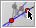
is slightly darker. This indicates the current mode of Cinderella.All mouse actions in the drawing surface refer to the selected mode. For drawing a single point you have to switch to the add a point mode by clicking it. Now move the mouse over the drawing surface and click the left button. A new point is added and labeled with a capital letter.
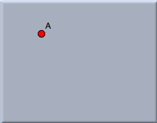 |
| Figure 1: Your first point |
Before you add a second point, continue reading. If you hold the left mouse button down while adding a point, you are able to move the point around. The definition of the point will be adapted to the geometric situation at the current location of the mouse pointer. (So far, there is not a lot of geometry in our drawing, but this will change soon.) Move the mouse over the drawing surface, press the left button, and hold it. Now move the mouse. You will notice that the new point sticks to the mouse pointer. Coordinates that indicate the current position are shown. When you approach an existing point (try it), the new point snaps to the old point. Only after you release the button is the new point added to the construction. If you release the mouse over an old point, no new point is added. Play with these features and add a few new points.
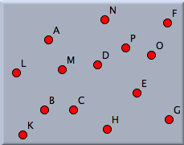 |
| Figure 2: Many points |
Undoing an Operation
Your screen may look a bit crowded now. There is an undo operation that inverts the actions you have performed. By pressing the undo button,
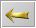
you will cause the last point you added to disappear. Click the undo button until exactly two points remain on the drawing surface. You can use the undo button whenever you make a mistake. You can undo as many consecutive operations as you want.Moving a Point
We want to continue with our construction of Pappus's theorem. You should first move the two remaining points A and B to approximately the positions shown in Figure 3.
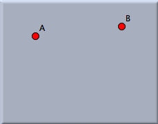 |
| Figure 3: Move to this situation. |
Most probably, your points are not already there. To move them, select move mode by pressing the "move mode" button in the toolbar. Now mouse actions in the drawing surface no longer add points; instead, you can select points and move them around. Move the mouse pointer over the point you want to move. Press the left mouse button. Hold it and drag the mouse. The point follows the mouse pointer. You will also notice that in this mode a point does not snap to other points. When you release the mouse button, the point is placed. In general, move mode allows free elements of a construction to be moved. The rest of the construction will change accordingly.
Adding a Line
We are now going to add a line from A to B. Switch to add a line mode by pressing the button
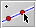
. In this mode you can add a line between two points using a press–drag–release sequence with the mouse. Move over point A. Press the left mouse button. Hold it and move the mouse over point B. Release the mouse.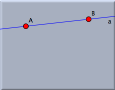 |
| Figure 4: Add a line |
This action should have created the desired line. You might have noticed a few things: When you pressed the mouse over point A, the point became highlighted. This means that you selected this point as the starting point of the line. While you drag the mouse, a second point is always present at the mouse position. When you release the mouse button, this second point will be added at the release point. When you approach another point, it will be highlighted, and the second point will snap to it. This is the action you used for attaching the line to point B.
If you did not notice these things or made a mistake, undo your operations and try again. Your final picture should look like Figure 4 before you proceed.
Adding More Lines
Now you are ready to add three more lines, in order to end up with Figure 5. You can do this with just three mouse operations. First, move over point B and press–drag to the position of the not-yet-existing point C. Do another press–drag–release from C to D, and finally from D to E.
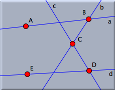 |
| Figure 5: More lines |
Observe that you have done all this without leaving "add a line" mode. You did some unnecessary work when you added the points A and B in add a point mode. You could have done this directly in add a line mode, since not only will the second point be created if necessary, but also the first one. The lines created so far were automatically labeled with the lowercase letters a to d.
Creating Points of Intersection
We will stay in add a line mode. Now we want to draw a line from point E to the intersection of the lines a and c. Move the mouse over E. Press the button. Hold it and move to the intersection of a and c. Release the mouse.
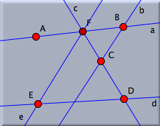 |
| Figure 6: Adding an intersection |
When you approached the intersection of the lines, they were highlighted and the endpoint of the new line snapped to the intersection. When you released the mouse, the new point was defined to be the intersection of the lines. If you move any one of the points A to E, the new line will follow the moves accordingly.
The new point F is drawn slightly darker. This means that it is not possible to move F freely in move mode. Thus, F is a "dependent" point. The other points in the construction are "free."
Two things are worth mentioning: With the same procedure you could also have added a "half-free" point that is bound to only one line. To do so, you need to release the mouse when you are over only one line. All these operations of creating intersections (dependent points), free, and half-free points work similarly in add a point mode. Many other modes, the interactive modes, also come with this feature. Browse the reference guide of this manual for further information.
Finishing the Drawing
Now it should be easy for you to finish the drawing by adding four more lines to achieve the final configuration shown in Figure 7. First add a line from A to the intersection of b and d. Then draw two lines from A to D and from B to E. Finally, draw a line from C to the intersection of e and f.
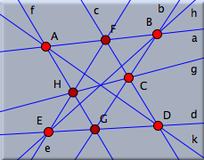 |
| Figure 7: Pappus's theorem |
You have created a configuration of eight points and nine lines. If you look at the configuration, you will notice that if everything was done correctly, the lines g, h, and k meet in a point. That this will always be the case in such a construction is the content of Pappus's theorem. Switch to move mode by clicking in the toolbar, and drag around the free points of the construction to convince yourself of the truth of this theorem. This theorem was known to the ancient Greek geometers and is named for Pappus of Alexandria, who flourished in the fourth century C.E. Later, the theorem turned out to be of fundamental importance for the theory of projective geometry.
Selecting and Changing the Appearance of a Drawing
You may not like the appearance of a drawing. The lines may be too thin, and perhaps you want to emphasize the final conclusion of the theorem. This can be changed by using the inspector of Cinderella.2. For this choose the menu item "Edit/Information". The following window will pop up:
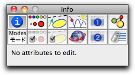 |
| Figure 8: The inspector |
There are several tabs in the inspector that refer to different aspects of the construction and the selected objects. To change the appearance of objects, go to the appearance tab by clicking the button
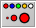
. If no elements are selected, the inspector shows that there are no attributes to edit.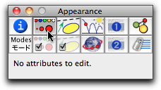 |
| Figure 9: Selecting the appearance tab |
As soon as an element is selected, the editable attributes of this elements are shown. Now select all lines by clicking the button
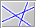
"Select all lines". The inspector window then looks as follows: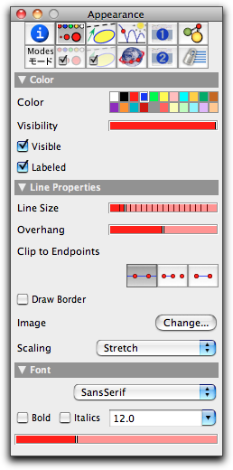 |
| Figure 10: The appearance tab |
Changes in the inspector are immediately applied to selected elements. If you now move the slider "Line Size" in the inspector to its third tick, all lines become thicker. After this, switch to move mode . Now, when you click over one or more elements, those elements will be selected. If you hold the shift key while you click, the selection state of the element will be toggled.
Click over line k, and then hold the shift key and click over lines h and g. The lines g, h, and k should be highlighted. Click the red color box in the inspector's color palette. The color of the three lines changes from blue to red. You can also change the size of these lines by moving the "Line Size" slider to its fourth tick. Finally, deselect everything by clicking the button
 .
.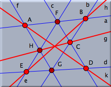 |
| Figure 11: Changed appearance |
Adding a Final Point and Proving a Theorem
Before continuing, open Cinderella's information window by choosing the menu item Views/Information Window. A console window pops up. Cinderella.2 uses this console to report nontrivial facts about a configuration.
We will now create a final point at the intersection of the three red lines. This time we will add a point by changing to intersection mode
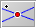
. This mode expects you to mark two lines. A new point will be added at the intersection of these two lines. Click two of the red lines, say g and h. Their intersection point will be added.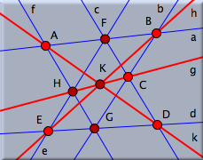 |
| Figure 12: The point of intersection |
Note that the newly added point K will always be incident to line k because of Pappus's theorem. The information console reports this remarkable fact automatically.
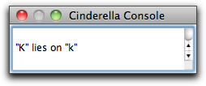 |
| Figure 13: A proven theorem |
You may wonder how this "theorem proving" works. Cinderella does not use symbolic methods to create a formal proof, but a technique called "randomized theorem checking." First the conjecture, "it seems that line k always passes through point K," is generated. Then the configuration is moved into many different positions, and for each of these it is checked whether the conjecture holds. It may sound ridiculous, but generating enough (!) random (!) examples in which the theorem holds is at least as convincing as a computer-generated symbolic proof. Cinderella uses this method over and over to keep its own data structures clean and consistent.
Moving Points to Infinity
Let us explore the symmetry properties of Pappus's theorem. For a nicer picture, we want to get rid of the line labels and make the points and lines a bit smaller. First select all lines using . Turn off the labeling by pressing the corresponding button in the inspector. Change the line size to "thin" (use the slider in the inspector). Then select all points using
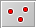
. Make them smaller using the "Point Size" slider in the inspector (observe that the inspector shows always information about the selected elements). Now choose the menu option "Views/Spherical View". What you get will not look very instructive at first glance.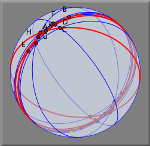 |
| Figure 14: A spherical view |
The spherical view shows a central projection of the plane to the surface of a ball. The projection point is the center of the sphere (see Figure 15). Every point is mapped to an antipodal pair of points, and each line is mapped to a great circle (a circle on the sphere dividing it into two equal hemispheres) of the ball.
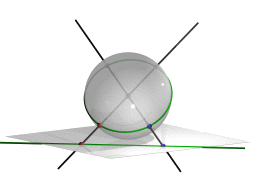 |
| Figure 15: Projection from the plane to the ball |
In spherical view there is a little red slider for controlling the distance of the ball to the original plane. Moving this slider corresponds to a kind of "zooming" operation on the sphere. Please move the slider from its original position much more to the right. Then the situation on the ball should become clearer. If you have adjusted the slider correctly, it should look somewhat like Figure 16. You should clearly recognize the original construction, now drawn on the surface of this ball.
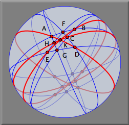 |
| Figure 16: Pappus's theorem on a ball |
The picture needs some explanation: For each point in the plane consider the line spanned by the point and the center of the ball. The intersection of this line with the surface of the ball gives the pair of antipodal points. For each line consider the plane spanned by the line and the center of the ball. The intersection of this plane and the surface of the ball is the great circle that represents the line in spherical view.
On the sphere there are points that have no correspondence in the Euclidean plane. If the ball touches the Euclidean plane at the "south pole," then the equator of the ball corresponds to the "points at infinity" in the usual Euclidean plane. In Cinderella it is possible to make manipulations in any currently open view. Therefore you can also move points in spherical view. The changes will be instantly reported to the Euclidean view. In particular, you can grab a point in spherical view and move it to what is really infinity in the Euclidean view.
We will do that now, in order to observe that our configuration has a nice threefold symmetry. Select point A (in spherical view) and move it to the 11 o'clock position of the boundary. This point is now really located "at infinity." Notice that in Euclidean view the lines passing through A became parallel, corresponding to the notion that "parallel lines meet at infinity." In a similar way, move point E to the 7 o'clock position on the boundary and move point C to the 3 o'clock position. Your spherical picture should then look like the ball in Figure 17. In Euclidean view you find three bundles of parallel lines, representing a kind of Euclidean specialization of Pappus's theorem. If you like, you can try to figure out the corresponding statement in terms of parallels and incidences.
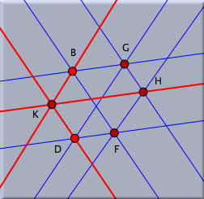 | 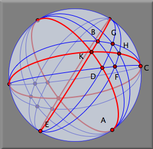 | |
| Figure 17: A threefold symmetry |
It may happen that the drawing in Euclidean view is too big or too small. You can use the zooming tools to change this. There is a "Zoom-In"
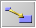
and a "Zoom-Out"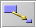
tool below the Euclidean view. With a press–drag–release sequence you can mark the region to be zoomed in or out.
Page last modified on Friday 02 of September, 2011 [16:36:14 UTC].
The original document is available at
http://doc.cinderella.de/tiki-index.php?page=Pappus%20Theorem